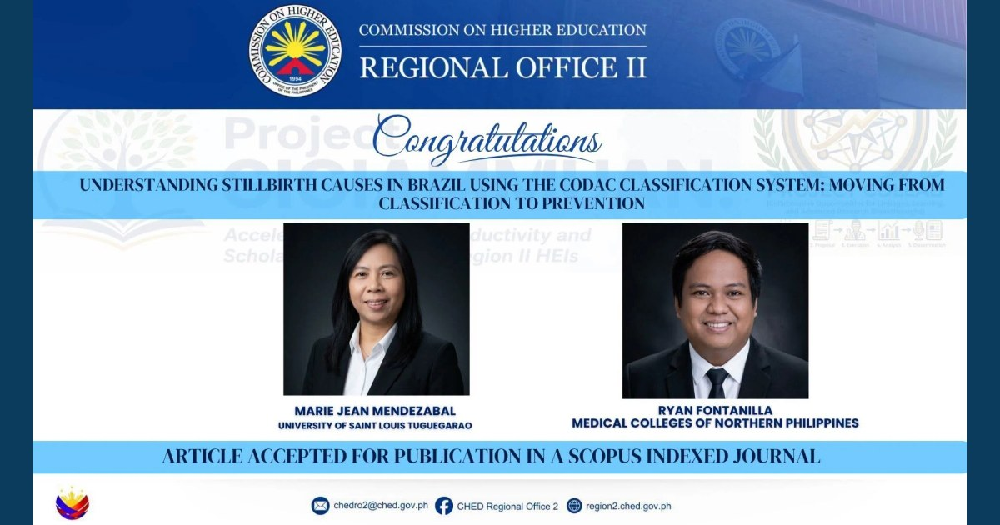

MCNP Research Director Co-Authors Research Article Accepted for Publication in Scopus-Indexed Journal

Dr. Ryan C. Fontanilla of MCNP and Marie Jean Mendezabal of the University of Saint Louis Tuguegarao received recognition from CHED Regional Office II for their research article accepted for publication in a Scopus-indexed journal.
Read full article